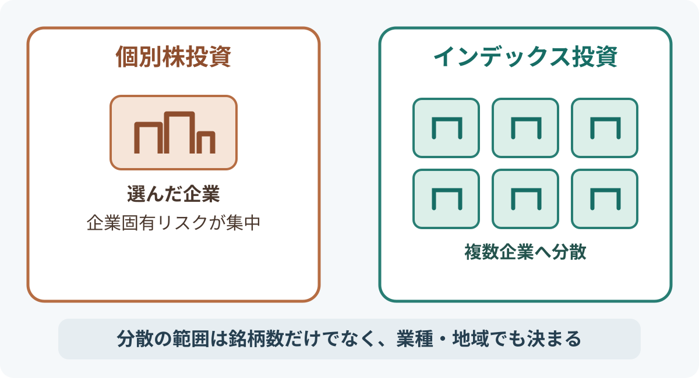

カテゴリツリーを開く
INVESTING STRATEGY / COMPARISON
個別株投資とインデックス投資仕組み・リスク・費用・手間を比較
個別株投資とインデックス投資は、どちらも企業の成長や利益を通じて株式市場のリターンを得ようとする方法です。ただし、投資先の選び方、分散の範囲、必要な分析、結果のばらつきが大きく異なります。比較するときは「どちらが必ず儲かるか」ではなく、何を自分で判断し、どのリスクを引き受けるのかを整理することが大切です。
1. 個別株投資とインデックス投資の違い
個別株投資は、投資家自身が企業を選び、その会社の株式を直接購入する方法です。業績、財務状態、競争力、経営方針、株価水準などを調べ、どの企業をいくら買うかを決めます。
インデックス投資は、日経平均株価やTOPIX、S&P 500、MSCI ACWIなどの株価指数に連動する成果を目指す投資信託・ETFを通じて、指数のルールに沿った複数銘柄へ投資する方法です。投資家は個々の企業を毎回選ぶ代わりに、どの指数へ投資するかを選びます。

| 比較項目 | 個別株投資 | インデックス投資 |
|---|---|---|
| 投資先 | 自分で選んだ企業の株式 | 選んだ指数に含まれる複数企業 |
| 銘柄選び | 企業ごとに調査・判断する | 指数の対象地域・銘柄選定ルールを選ぶ |
| 分散 | 保有銘柄数や業種・地域の組み合わせ次第 | 指数の構成銘柄・ウェイトに応じて分散 |
| 主なリスク | 市場全体のリスクに加え、企業固有のリスクが大きくなりやすい | 市場全体・地域・業種・指数構成の偏りなど |
| 必要な作業 | 決算、競争環境、経営、株価評価を継続確認 | 指数・商品・費用・連動状況を定期確認 |
| 費用 | 売買手数料、スプレッド、情報収集の時間など | 信託報酬等の保有コスト、売買手数料、スプレッドなど |
| 結果のばらつき | 選んだ企業によって市場平均から大きく離れることがある | 指数の値動きに近づくことを目指す |
インデックス投資も、すべての株式市場へ均等に投資するわけではありません。例えば、米国大型株指数なら米国の大型企業に集中し、時価総額加重型の指数では時価総額の大きい企業ほど比率が高くなります。「インデックス」という名前だけで分散の範囲を判断せず、指数の中身を確認しましょう。株価指数の計算方法や日経平均・TOPIX・S&P 500の違いは株価指数の基礎解説、インデックス型とアクティブ型の違いはインデックス型とアクティブ型の比較も参照してください。
2. リスクと分散の違い
個別株は企業固有の問題が資産全体に響きやすい
1社だけを保有している場合、その企業の不祥事、製品事故、競争力の低下、規制変更、財務悪化などが株価に大きく影響します。市場全体が上昇していても、保有企業だけが値下がりする可能性があります。
複数の企業へ分散すれば、1社の問題が資産全体へ与える影響を小さくできます。ただし、同じ業種・地域に偏っていれば共通の要因で同時に下落することがあります。銘柄数だけでなく、業種・地域・収益源の違いも確認する必要があります。
インデックスは銘柄分散を仕組みに組み込める
幅広い株価指数に連動する商品なら、多数の企業へ一度に投資できます。個別企業の調査や銘柄入れ替えを自分で行う負担を抑えながら、企業固有のリスクを分散しやすい点が特徴です。
一方、株式指数に投資する以上、金融危機や景気後退などで株式市場全体が下落するリスクは残ります。株式だけのインデックスファンドは、債券や現金まで含む分散投資とは異なります。指数の国・業種・大型銘柄への集中も確認しましょう。
3. リターンはどちらが高い？
個別株投資とインデックス投資のどちらが高いリターンになるかは、事前に決まりません。個別株では市場平均を大きく上回る企業を選べる可能性がある一方、業績悪化や競争力低下を見誤れば市場平均を大きく下回ることもあります。インデックス投資は選んだ指数に近い成果を目指すため、市場平均を大きく上回ることを目的とする方法ではありません。
ここで参考になるのが、アクティブ運用ファンドとベンチマーク指数を比較するSPIVAの調査です。S&Pダウ・ジョーンズ・インデックスの2026年中期版（2026年6月末時点）では、10年・15年の期間で指数を下回ったファンドの割合は、全日本株式で79.26%・74.63%、米国株式で93.48%・96.00%、グローバル株式で98.47%・99.12%でした。
| アクティブファンドの分類 | 10年間で指数を下回った割合 | 15年間で指数を下回った割合 |
|---|---|---|
| 日本株式（全体） | 79.26% | 74.63% |
| 米国株式 | 93.48% | 96.00% |
| グローバル株式 | 98.47% | 99.12% |
ただし、この調査は運用会社が運用するアクティブ投資信託と指数の比較です。個人が直接選んだ個別株の成績を測った調査ではありません。したがって「個別株投資をすれば必ず指数に負ける」と証明するものではなく、継続的に市場平均を上回る運用が簡単ではないことを考える参考資料として扱います。
また、比較する期間・通貨・配当込みかどうか・税金や費用の扱いをそろえなければ、成績を公平に比較できません。過去に高いリターンを出した企業や指数が、将来も同じ結果になるとは限りません。
4. 費用と手間の違い
個別株投資で必要になること
- 決算短信・有価証券報告書・決算説明資料を読む。
- 売上、利益、キャッシュフロー、負債、資本効率を確認する。
- 競合企業や業界全体の状況を比較する。
- 株価が利益や純資産に対して妥当かを検討する。
- 保有後も業績・経営方針・投資仮説が変わっていないか確認する。
売買手数料が低くても、調査・判断・保有管理にかかる時間は必要です。銘柄を増やすほど確認対象も増えます。
インデックス投資で必要になること
- 指数の対象地域、銘柄数、時価総額加重などの構成ルールを確認する。
- 投資信託・ETFの信託報酬、実質コスト、売買コストを比較する。
- 指数との連動状況、純資産総額、運用継続性を確認する。
- 自分の投資期間と値下がりへの耐性に合うかを確認する。
個別企業の調査負担は小さくなりますが、商品選びが不要になるわけではありません。低コストでも投資対象が自分の目的に合っていなければ、適切な選択とはいえません。信託報酬や実質コストの確認方法は投資信託の費用解説で詳しく扱っています。
5. 投資方法を比較するときの確認項目
- 投資目的と期間：生活資金や近い将来に使うお金と投資資金を分け、運用期間や資金を使う時期を整理します。
- 指数の対象範囲：インデックス投資では、対象地域・銘柄数・時価総額加重などの構成ルールを確認します。
- 企業分析に必要な作業：個別株投資では、決算資料・競争環境・財務状態・株価評価を継続して調べる必要があります。
- 分散と集中度：銘柄数だけでなく、業種・地域・構成比を確認し、1社の株価が30%下落した場合に資産全体へ与える影響も試算できます。
- 費用と取引条件：売買手数料・税金・信託報酬・スプレッドなど、投資方法と商品に応じて発生する費用を同じ条件で比較します。
個別株を分析する際は、EPS、PER、BPS、PBR、ROEなどの財務指標を、それぞれの意味と限界を踏まえて確認します。
6. 比較から確認できる事実
個別株投資とインデックス投資の違いは、主に「投資先を誰がどの単位で選ぶか」「企業固有の値動きをどの程度引き受けるか」「銘柄選定や保有後の管理にどれだけ時間を使うか」にあります。
- 投資対象：個別株投資では投資家が選んだ企業の株式を保有します。インデックス投資では、選択した指数の算出ルールに従う複数銘柄を保有します。分散の範囲は指数ごとに異なります。
- リスクの構造：個別株では市場全体の変動に加え、保有企業固有の業績・財務・経営などの影響を直接受けます。インデックスでは複数企業に分散されますが、市場全体や指数の構成銘柄に共通する要因による下落は避けられません。
- 運用に必要な作業：個別株では企業調査、株価評価、保有判断を銘柄ごとに行います。インデックス投資では指数の対象範囲や商品コストなどを確認しますが、個々の構成企業を継続的に選別する必要はありません。
- 過去の運用成績データ：SPIVAはアクティブ運用ファンドと比較指数の成績を調べた資料です。ファンドの多くが指数を下回った期間があることは確認できますが、その結果を個人投資家の個別株運用成績へそのまま当てはめることはできません。
これらは投資方法ごとの仕組みと、調査資料で確認できる範囲の整理です。実際の選択では、投資目的、分散の範囲、調査に使える時間、費用、損失への備えなど、個々の条件を照らし合わせる必要があります。個別株の企業評価についてはEPS・PER・BPS・PBR・ROEの各解説、分散の考え方は分散投資の基礎、指数の違いは全世界株式とS&P 500の比較を参照してください。
参考資料
- 日本取引所グループ「株価指数に関するよくあるご質問」 — 株価指数とインデックス型投資信託の役割。
- 金融庁「資産形成の基本」 — 長期・積立・分散投資の基本。
- S&Pダウ・ジョーンズ・インデックス「SPIVA日本スコアカード」 — アクティブ運用ファンドとベンチマークの比較。個人の個別株投資の成績調査ではない点に注意。